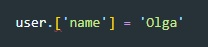
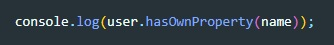
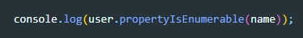
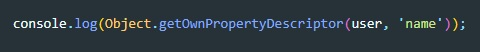
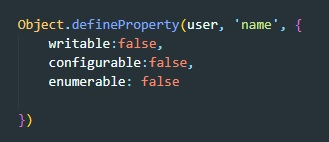
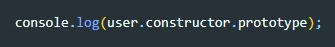
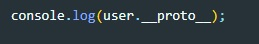
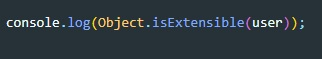
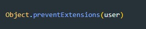

Для объявления объекта можно использовать два синтаксиса:
Второй способ называется Литерным. В этом случае мы сразу можем задать свойства для объекта
Для обращения к свойствам объекта, сначала вызывают объект, затем через точку указывают свойство
Так же обращаться к свойствам объекта можно вот так:
Для удаления свойства можно использовать опратор delete

С помощью оператора in
он возвращает true если объект имеет собственное или унаследованное свойство с этим именем. имя свойства обязательно указываем в кавычках
С помощью метода hasOwnProperty()
метод hasOwnProperty проверяет имеет ли объект собственное свойство с указанным именем. Для наследуемых свойств он возвращает false
С помощью метода propertyIsEnumerable()
этот метод возвращает true только если собственное свойство объекта имеет дескриптор enumerable в значении true
Этот цикл используется для перебора всех свойств объекта
Синтаксис:

Пример

D функциях конструктора есть два правила:
Создадим функцию которая нам будет создавать объект
Пример

Метод create получает на вход два параметра, которые оба являются объектами. Первый параметр может содержать объект который станет прототипом для нового объекта. Во втором мы указываем ключи объекта (свойства) и так же можем указать методы объекта.
В примере свойство которое мы задали нашему объекту person - это его имя (name). Это свойство может иметь собственные свойства (дескрипторы):
Что бы получить дескрипторы свойств нужно воспользоваться методом глобального объекта Object - getOwnPropertyDescriptor(). У этого метода два входных параметра:
1 - объект
2 - свойство объекта у которого нужно посмотреть дескрипторы
Что бы изменить дескрипторы используется метод defineProperty
Этому методу мы передаем уже три входных параметра:
1 - объект
2 - свойство объекта у которого нужно поменять дескрипторы
3 - объект с дескрипторами свойства
prototype - определяет объект от которого наследуются свойства
Как посмотреть прототип объекта:
Еще один способ
class - содержит строку с информацией о типе объекта
extensible - определяет допускается ли добавлять в объект новые свойства т.е. является ли объект расширяемым.
Что бы проверить этот атрибут используется метод глобального объекта:
Возвращает булевое значение.
Что бы сделать объект не срасширяемым используется метод preventExtensions
После того как мы сделали объект не расширяемым, его нельзя будет сделать обратно расширяемым
Рассмотрим пример

Ключу (свойству) age мы задали методы get и set. Метод get возвращает какое либо значение. В то время когда метод set принимает како-либо значение (value)
Так при запросе в консоли person.age мы получим следующий результат:

Т.е. сработает метод get
Но если мы обратимся к person.age и зададим какой-нибудь параметр, то сработает метод set
В итоге, свойству объекта мы можем задать метод get - который будет что то возвращать, или метод get - который будет что то получать и обрабатывать это